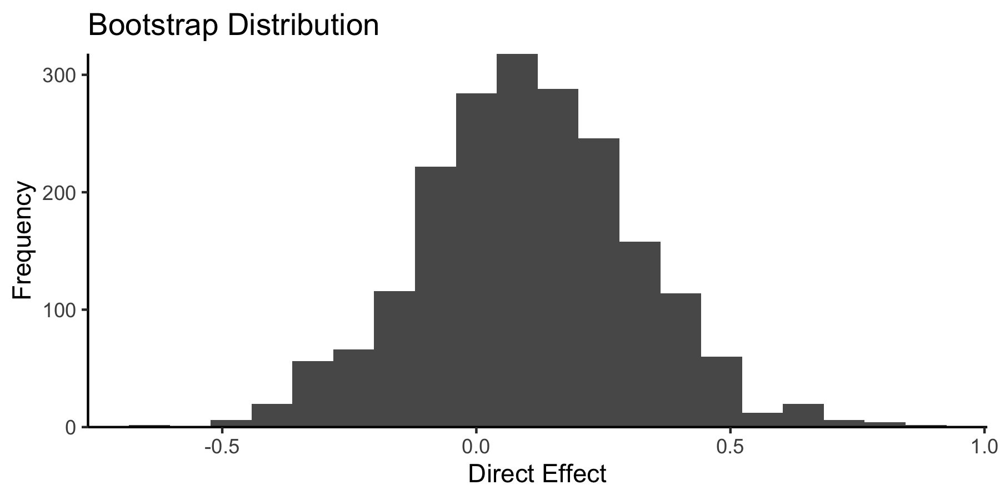

multimedia is an R package for multimodal mediation analysis of microbiome data. It streamlines data curation, mediation and outcome model specification, and statistical inference for direct and indirect effects. By defining causal relationships across data modalities, it can support principled data integration. You can read more about the package in our preprint:
The preprint describes the scientific context and interpretation for two of the vignettes in this package. One gives a multi-omics analysis of IBD, and the other describes how to simultaneously model 16S profiles and survey responses in a mindfulness intervention study.
Installation
You can install the development version from GitHub with:
Example
Here is a simple example of estimating direct and indirect effects. The data are randomly generated (no real effects), but we imagine that the ASV columns mediate the relationship between treatment and PHQ. This is mimics the possibility that the microbiome (ASV = Amplicon Sequence Variant) mediates the relationship between a treatment and depression (PHQ = Patient Health Questionnaire). You can find more details in the random.Rmd vignette.
The original data here are a SummarizedExperiment. The package can also take phyloseq objects and data.frames.
## class: SummarizedExperiment
## dim: 5 100
## metadata(0):
## assays(1): counts
## rownames(5): ASV1 ASV2 ASV3 ASV4 ASV5
## rowData names(0):
## colnames: NULL
## colData names(2): treatment PHQNext, we specify which columns are the treatment, mediators, and outcomes. Notice that we can use tidyselect syntax to match multiple columns.
## [Mediation Data]
## 100 samples with measurements for,
## 1 treatment: treatment
## 5 mediators: ASV1, ASV2, ...
## 1 outcome: PHQNext, we fit all mediation analysis components and estimate effects. By default, the package uses linear models – see the vignettes for examples using sparse regression, random forests, and bayesian hierarchical models instead.
## [Multimedia Analysis]
## Treatments: treatment
## Outcomes: PHQ
## Mediators: ASV1, ASV2, ...
##
## [Models]
## mediation: A fitted lm_model().
## outcome: A fitted lm_model().In any mediation analysis, there are several types of effects that could be interesting, each corresponding to different ways of traveling from the treatment to the outcome in the mediation analysis causal graph. In the block below, direct_effect captures treatment effects that bypass the microbiome; indirect_effect are effects that are mediated by ASV relative abundances. Since this example uses a linear model, the effects are identical for the two indirect settings.
## # A tibble: 2 × 4
## outcome indirect_setting contrast direct_effect
##
## 1 PHQ Control Control - Treatment 0.0931
## 2 PHQ Treatment Control - Treatment 0.0931## # A tibble: 2 × 4
## outcome direct_setting contrast indirect_effect
##
## 1 PHQ Control Control - Treatment 0.0226
## 2 PHQ Treatment Control - Treatment 0.0226The package also includes helpers to visualize and perform inference on these effects. For example,
boot <- bootstrap(model, exper, c(direct = direct_effect))
ggplot(boot$direct) +
geom_histogram(aes(direct_effect), bins = 20) +
scale_y_continuous(expand = c(0, 0)) +
theme_classic() +
labs(x = "Direct Effect", y = "Frequency", title = "Bootstrap Distribution")
If we want to use a different type of model, we can just modify the original multimedia specification. Below we use a sparse regression model, which correctly recovers that the direct effects are 0.
## # A tibble: 2 × 4
## outcome indirect_setting contrast direct_effect
##
## 1 PHQ Control Control - Treatment 0
## 2 PHQ Treatment Control - Treatment 0